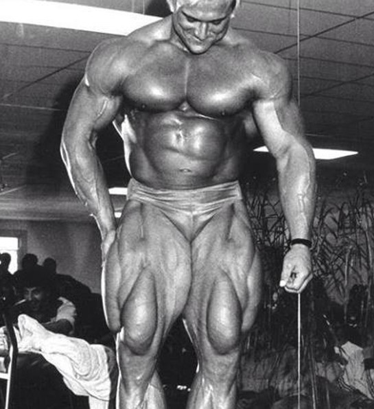

Tom Platz, noto anche come "The Golden Eagle", è una figura leggendaria nel mondo del bodybuilding. Nato il 26 giugno 1955 a Fort Sill, Oklahoma, è celebre per la sua incredibile dedizione allo sport e per le sue gambe straordinarie, che lo hanno reso un'icona del bodybuilding.
Tom Platz ha iniziato la sua carriera agonistica nei primi anni '70, competendo in numerosi concorsi di bodybuilding. La sua prima grande vittoria è arrivata nel 1978, quando ha conquistato il titolo di Mr. America. Questo successo lo ha portato a gareggiare in competizioni internazionali, inclusi i prestigiosi concorsi Mr. Olympia e Mr. Universe. Sebbene non abbia mai vinto il Mr. Olympia, Platz si è classificato tra i primi dieci in diverse edizioni, guadagnandosi il rispetto e l'ammirazione della comunità del bodybuilding.
Uno degli aspetti più distintivi del fisico di Tom Platz erano le sue gambe. Considerate tra le migliori nella storia del bodybuilding, erano il risultato di un regime di allenamento estremamente intenso e rigoroso. Platz era noto per i suoi incredibili squat, spesso caricando oltre 200 kg per ripetizioni alte. La sua dedizione e la sua passione per l'allenamento delle gambe hanno ispirato generazioni di bodybuilder.
Tom Platz non era solo conosciuto per il suo fisico, ma anche per la sua filosofia di allenamento unica. Credeva fermamente nell'intensità e nell'impegno totale. Platz era famoso per i suoi allenamenti lunghi e duri, che spesso spingevano il suo corpo al limite. Questo approccio gli ha permesso di sviluppare una muscolatura impressionante e ha contribuito a cementare la sua reputazione come uno degli atleti più dediti e determinati del suo tempo.
Dopo aver terminato la sua carriera agonistica, Tom Platz ha continuato a contribuire al mondo del fitness e del bodybuilding come allenatore, relatore e autore. Ha tenuto numerosi seminari e workshop in tutto il mondo, condividendo la sua vasta conoscenza e la sua esperienza con nuove generazioni di atleti. Platz ha anche lavorato come consulente per diverse riviste di fitness e ha partecipato a numerosi documentari sul bodybuilding.
L'eredità di Tom Platz nel mondo del bodybuilding è immensa. Oltre alle sue impressionanti performance e alla sua incredibile fisicità, è ricordato per la sua passione, la sua etica del lavoro e il suo approccio filosofico all'allenamento. Platz ha ispirato innumerevoli atleti a spingersi oltre i propri limiti e a perseguire i propri obiettivi con dedizione e determinazione. La sua influenza si sente ancora oggi, e il suo nome è sinonimo di eccellenza nel bodybuilding. In conclusione, Tom Platz è una leggenda vivente, un esempio di ciò che si può ottenere con passione, impegno e duro lavoro. La sua carriera e la sua vita sono una testimonianza della potenza della volontà umana e della dedizione allo sport.